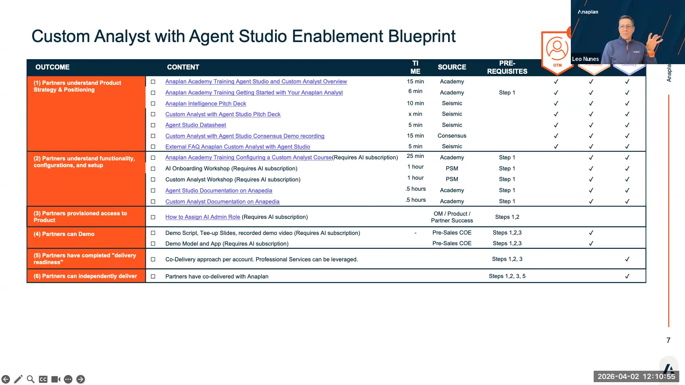
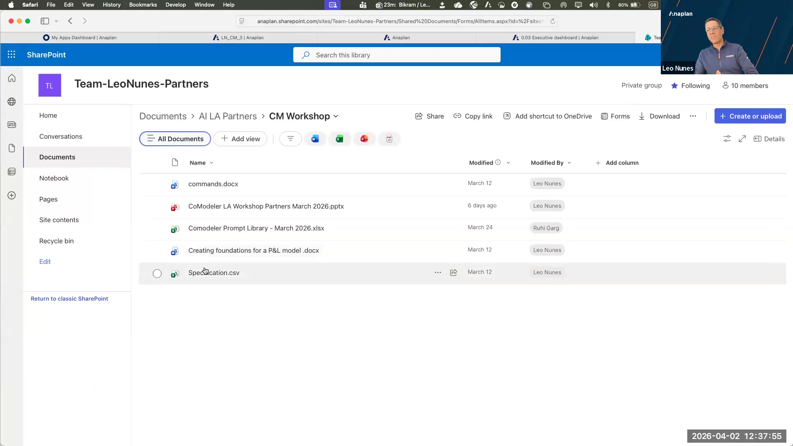

Partner Enablement Reference
Seismic blueprint, Academy courses, provisioning, demo env, key contacts

Custom Analyst with Agent Studio Enablement Blueprint — partner outcomes and content resources
Seismic Enablement Blueprint
All AI enablement materials are published on Seismic. The enablement blueprint is on the Seismic splash page.
- Access: Log into Seismic. AI enablement blueprint is on the home splash page.
- No access? Submit a request through the Partner Portal — Seismic access is provisioned within 1–2 business days.
- Important: Always use the Seismic links rather than the SharePoint folder Leo shared during the session. Leo mentioned he will be cleaning up and possibly deleting the SharePoint folder.
What's in the Blueprint
| Audience | Content | Format |
|---|---|---|
| Sales | Basic AI overview (15 min), pitch decks, onboarding deck, demo recording | Video + slides |
| Pre-Sales / SC | Pre-sales demo recording, how to run CoModeler lab with customers | Video (recorded session) |
| Technical | Full model building workshop (Academy), CoModeler lab guide, Custom Analyst config workshop | Academy course + workshop |
| All | Enablement blueprint overview, current deck (April 2026) | Slides |
Academy Courses
- CoModeler Workshop — Full model building lab. Available on Anaplan Academy. Recommended for TCs and SAs before customer delivery.
- Custom Analyst Configuration — Step-by-step configuration course. Available on Academy.
- Note from Leo: If you've already completed the Academy course, there's no need to repeat the live technical workshop — the content is the same.
Tenant Provisioning Checklist
- Partner tenant is entitled for AI (CoModeler + Agent Studio) — confirm with your Anaplan Partner Success Director
- Tenant admin has assigned AI Admin role to at least one user per workspace
- CoModeler is enabled for at least one workspace in Agent Studio
- Target models are standard (non-deployed) models
- All practitioners have Seismic access (verify before running a workshop)
- All practitioners have Academy access
Demo Environment Request
Anaplan maintains a demo AI copy that can be used for customer demos and internal practice. To request access:
- Contact your Anaplan Partner Success Director (Ben / Leo's counterparts)
- Leo mentioned during the session: "We need to check if they were giving access to that AI demo copy. If not, we need to copy this over to them. Please add me to the workspace and I'm happy to copy it."
- Reference the April 2, 2026 session when making the request
Token Guidance
As of April 2, 2026, partner tokens are not being counted. The product team confirmed this during the session. Use this window to:
- Run all workshop labs without cost concern
- Build your prompt library extensively
- Practice Custom Analyst configuration iterations
- Generate documentation from real models to establish quality baselines

Leo's shared folder — CoModeler workshop materials, prompt library CSV, and session recordings (access via Seismic blueprint, not SharePoint)
Token counting will likely begin at some point. When it does, guidance on token budgets for customer deployments will come through the partner channel. Watch your Seismic blueprint for updates.
Key Contacts
| Role | Person | Scope |
|---|---|---|
| Partner Success Director (AI) | Leo Nunes | AI enablement, pre-sales support, workshop coordination |
| Partner Success Director | Ben (last name not provided in session) | Overall partner relationship, coordination |
| Partner Coordinators | Mackenzie, Paul | AI admin provisioning, tenant access coordination |
| Escalation | Email Leo directly | Any questions that can't be answered async — Leo committed to responding or taking to experts |
Leo's invitation: "Send all and any questions over email, and we'll be happy to help you until we organize some sort of weekly or bi-weekly catch-ups." Use this channel for anything not covered in this guide.